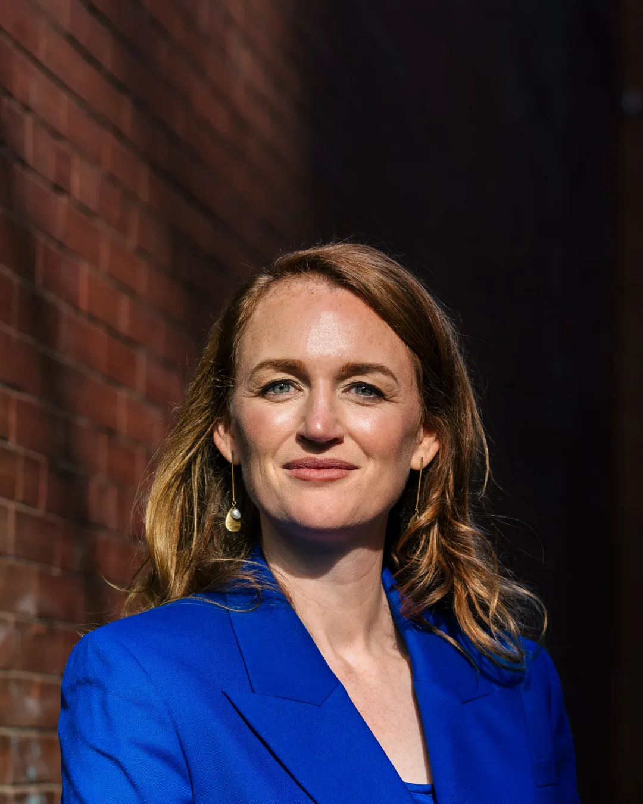
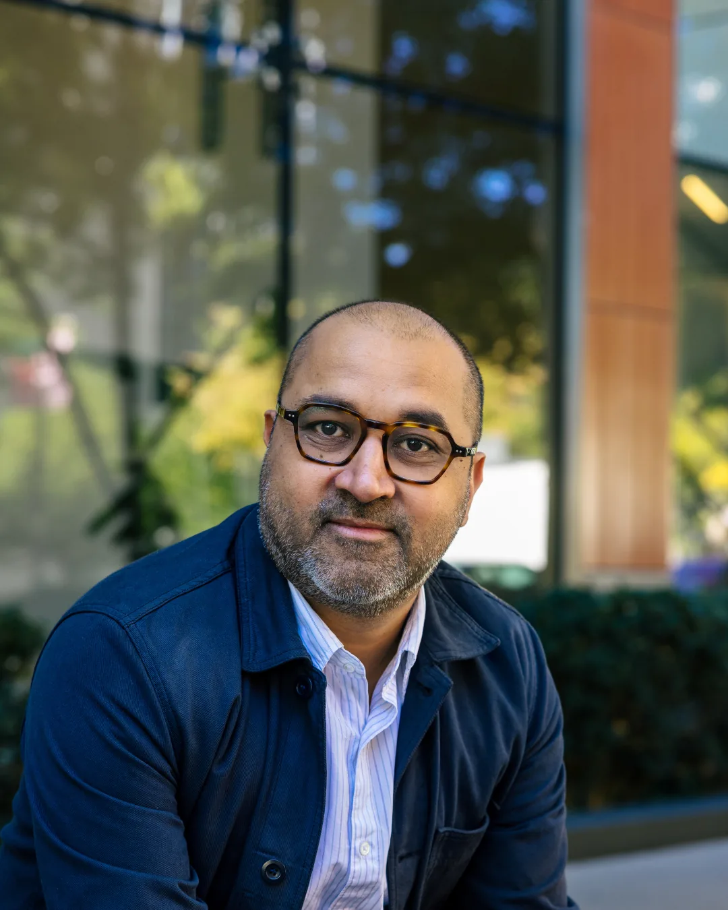
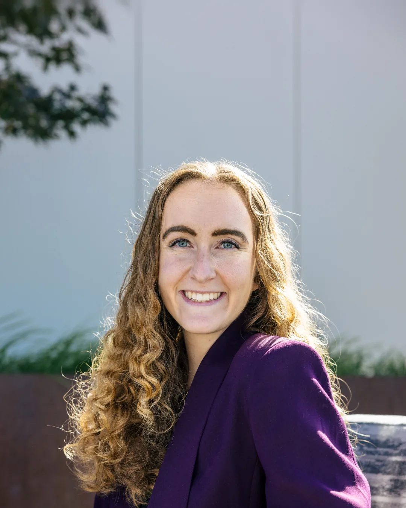

We’re working to ensure AI’s transformation of work isn’t at odds with American livelihoods.
Independent and nonpartisan, Breakwater pioneers solutions, builds public momentum, and will co-create a vision for the future of work that AI’s transformation demands.
Joining forces with the best minds tackling this challenge to ideate, test, scale and pitch what works together.

Molly Kinder is the founding CEO of the Breakwater Initiative. Over 25 years, she has navigated Washington as a policymaker, researcher, and organization builder, from the Obama Administration to co-founding a $200 million social impact fund. Most recently, she was a Senior Fellow at the Brookings Institution, where she led work on how AI is transforming work and what to do about it. Her work has shaped federal policy, moved more than $1 billion in public investment, and reached more than two million workers. Governors, White House advisers, members of Congress, labor leaders, and people inside the frontier AI labs regularly call on her for answers. Molly co-chairs Governor Hochul’s FutureWorks Commission and serves on Governor Newsom’s Innovation Council. She holds an MPA/ID from Harvard Kennedy School and a B.A. from Notre Dame.
Gretchen has dedicated her career to building organizations that advance a more equitable economy. Her work spans technology, economic policy, and community development, with a focus on translating ambitious ideas into high-impact policies, programs and institutions. She was previously at Omidyar Network, where she led the Reimagining Capitalism portfolio, incubated large scale partnerships, and served as COO. While living in Asia, she was CEO of GenerationHope, the Philippines’ first Certified B Corporation; led strategy at PRADAN, which advances the economic and political empowerment of women across rural India and helped build McKinsey’s Social Sector Office. Gretchen has served as an appointee at the State Department, and sits on the boards of BuildUS, Aceli Africa, Global Development Incubator, and Friends of Hope. She holds degrees from Harvard Kennedy School and Duke University.
Palak Shah has spent her career inventing new ways to make work better for people. For over a decade, she was a senior executive at the National Domestic Workers Alliance, where she helped win 12 state laws and founded NDWA Labs. There, she built a novel 200,000-worker dataset and launched a $30 million pandemic fund that became a model for mayors nationwide. She is a Senior Fellow at MIT's Institute for Work and Employment Research. Her work has been featured in The New York Times, Stanford Social Innovation Review, and Fast Company. She previously held leadership roles in Governor Deval Patrick's administration, a hospital system in Appalachian coal country, and Accenture Strategy. She holds an MPP from Harvard Kennedy School and a BS from Northwestern University.

Anmol Chaddha is a policy expert on economic inequality, jobs and work, with a particular focus on technological change. He previously led a program on AI and workers/jobs at the Omidyar Network and managed the California Future of Work Commission, created by Governor Gavin Newsom to develop a broad agenda promoting economic equity. Anmol has extensive experience in policy and social science on economic inequality, racial inequality, low-wage work, job quality, debt, and wealth. He developed policy and research on economic inequality at the Federal Reserve Bank of Boston. He holds a PhD from Harvard, where he was a Fellow in Inequality and Social Policy at the Harvard Kennedy School, and a B.A. in Economics from the University of California, Berkeley.
Mayu is a policy strategist with experience helping state and regional leaders build durable cross-sector solutions that expand economic opportunity. At Breakwater, she helps lead R&D to design and test new approaches, including around how young people build expertise and pursue meaningful careers as AI reshapes entry-level work. Previously at Brookings Metro, she co-authored a playbook for governors and legislators on strengthening state-regional economic development, informed by fieldwork with hundreds of leaders across more than a dozen states. Her work spanned place-based industrial policy, workforce development, and inclusive regional economic growth. She graduated from Princeton’s School of Public and International Affairs with a bachelor’s degree in public policy.

Diana brings experience from management consulting, government and political campaigns. In BCG's federal practice, she worked with large federal agencies in public health, finance, state and regional transportation, and defense to develop transformation strategies across technology, procurement, operating model, and strategic planning. She also interned on the economic policy team for the Biden for President and Harris for President 2024 presidential campaigns and at the White House National Economic Council, where she focused on industrial strategy and place-based economic development. Diana graduated with a bachelor's degree in political science and economics from the Massachusetts Institute of Technology.
Sam joins Breakwater as Special Assistant for Economic Policy, where he leads the development of tax and fiscal policy initiatives. Previously, he researched public economics at the Brookings Institution and the University of Chicago, publishing papers on corporate taxation, fiscal consolidations, and inequality measurement. He has consulted on tax and industrial policy for local governments and national campaigns in the US and UK, and presented research at top professional conferences including the National Tax Association and ASSA Annual Meetings. Sam graduated summa cum laude from Williams College, where he won the Carl Van Duyne prize in economics, and earned master’s degrees from the London School of Economics and the University of Manchester, where he was a Marshall Scholar.
Eilis Klein is an experienced and trusted staffer from the non-profit and philanthropic space. Eilis is currently the special assistant to Breakwater Initiative’s CEO Molly Kinder. Previously, Eilis was special assistant to Mark Malloch-Brown, first in the executive office at the Open Society Foundations and then as the project manager for the BWI at 80 Initiative. Eilis graduated with a B.A. from Connecticut College and an M.P.A. from the Wagner School at New York University.
Asad Ramzanali is the Director of AI & Technology Policy at the Vanderbilt Policy Accelerator, a public policy research center at Vanderbilt University, where his research spans AI governance, tech-sector competition, the economics of AI, and R&D policy. He previously served as Chief of Staff and Deputy Director for Strategy at the White House Office of Science and Technology Policy (OSTP), with the designation of Special Assistant to the President. Before that, he spent four years on Capitol Hill. His work has been published in The Atlantic, TIME, Politico, MIT Technology Review, and Issues in Science and Technology, and he has testified before Senate and House committees. He began his career in Silicon Valley, working in corporate strategy and investing in early-stage fintech startups serving low-income Americans. He holds a BA in economics from UCLA and an MPP from Harvard Kennedy School.
Sam Manning is a Senior Research Fellow at GovAI and a Non-Resident Senior Fellow at the Foundation for American Innovation. Sam’s work focuses on measuring the economic impacts of frontier AI systems and designing policy options to help ensure that advanced AI can foster widespread economic prosperity. He previously conducted research with OpenAI and OpenResearch, where he worked on a randomized controlled trial of a guaranteed income program in the US. Sam has a MSc in International and Development Economics from the University of San Francisco.
Ioana Marinescu is a professor at the University of Pennsylvania School of Social Policy & Practice, with secondary appointments in the Economics Department and the Wharton School of Business (BEPP), and a research associate at the National Bureau of Economic Research. Marinescu examines labor markets, market power, and technological change, with current work focusing on artificial intelligence. Her pioneering research on wages and monopsony power led to her Congressional testimony on labor market competition and her subsequent appointment as principal economist at the US Department of Justice Antitrust Division (2022-2024). There, she helped integrate labor market analysis into the 2023 Merger Guidelines, the first version to explicitly address worker impacts. Her current projects focus on the economic implications of artificial intelligence and on policy tools, such as safety nets and competition policy, that can foster broad-based prosperity in an AI-driven economy. She has served on Anthropic’s Economic Advisory Council since 2025, advising on the economic implications of AI, and she provides briefings and expert insights on labor markets, antitrust, and AI to policymakers, journalists, and private-sector leaders. Marinescu publishes in top journals including the Review of Economic Studies and the Quarterly Journal of Economics, where she serves as an associate editor. Her research and expertise are regularly featured in outlets like the New York Times and Fortune.
Rachel Lipson is a Research Fellow at Harvard Kennedy School’s Reimagining the Economy project and Mossavar-Rahmani Center for Business and Government, and co-founder of the Harvard Project on Workforce. She is also a Resident Scholar at the Aspen Institute’s Economic Strategy Group and a Nonresident Senior Fellow at Brookings Metro. Rachel studies how education, labor market institutions, and public policy can adapt to technological disruption and help workers through economic transitions. Her new book, The New American Frontier: Job Training for the Next Technological Age, focuses on what can be learned from regions that have been early to emerging technologies. From 2023 to 2025, Rachel served as a Senior Policy Advisor at the U.S. Department of Commerce’s CHIPS Program Office, where she helped launch the workforce strategy for the $50 billion federal investment to revitalize domestic semiconductor manufacturing. Prior to joining the federal government, Rachel served as the founding director of the Harvard Project on Workforce. Rachel graduated from Harvard College and holds an MBA and MPP from Harvard. She is a recipient of the Harvard Certificate of Distinction and Excellence in Teaching and the Frederick Fischer Prize for social policy research.
Brad Littlejohn (Ph.D, University of Edinburgh) is Program Director and Policy Advisor at American Compass, Policy Chair for the Alliance for a Better Future, and a member of the Interdenominational Advisory Council on Artificial Intelligence. Previously, he served as a Fellow of the Ethics and Public Policy Center (EPPC), and President of The Davenant Institute. He is the author or editor of nineteen books, including most recently Called to Freedom: Retrieving Christian Liberty in an Age of License. His newest project, with Basic Books, seeks to offer an analysis of the political economy of digital technology on the cusp of the AI era. He lives in Loudoun County, Virginia with his wife, Rachel, and four children.
Bharat is Research Director for AI Economics and Policy at the Stanford Digital Economy Lab and a Research Fellow at GovAI. He leads the AI Economic Indicators project at Stanford. He researches the economics of AI, including its labor market impacts. His past work includes “Canaries in the Coal Mine? Six Facts about the Recent Employment Effects of Artificial Intelligence”. His research has been cited in the Wall Street Journal, New York Times, Washington Post, the Economist, and various other news publications globally. He also advises policymakers on the economic impacts of AI.
Will Raderman is Director of Policy at Searchlight Institute, focusing on employment and social policy issues. He previously served as a policy analyst at the Niskanen Center, where he testified before the House Ways and Means Subcommittee on Work & Welfare, and as a research fellow at Boston University, where he tracked and analyzed state policy actions during the COVID-19 pandemic, focusing on unemployment insurance and paid leave. Raderman’s work has been featured in the Washington Post, Barron’s, and Health Affairs. Will hails from Dobbs Ferry, New York. He is a graduate of George Washington University and University College London.
Sam Hiner is Co-Founder and Executive Director of the Young People’s Alliance, a bipartisan movement of 4,000 young people advocating for solutions to the pressing challenges facing Gen Z, including jobs, affordability, and community. Sam’s work includes starting the Human-like AI Coalition, which coordinated advocates to pass eight state laws regulating AI in 2026. Sam graduated from UNC-Chapel Hill in 2025 with B.A.s in Sociology and Economics and was named to the Forbes 30 Under 30 Social Impact list in 2026.
Devesh Kodnani is an economist and policy advisor focused on reducing income inequality and ensuring that workers share in the gains from new technologies like AI. He is currently completing a PhD at MIT and brings experience from the U.S. Joint Economic Committee, the Economic Security Project, the Center for American Progress, and Goldman Sachs Economics Research. His research on AI, inflation, labor markets, and trade has been cited in major press outlets including The New York Times and in the Economic Report of the President.
Mary Olson is a PhD student at the MIT Sloan Institute for Work and Employment Research. Her research focuses on the relationship between labor markets, technological change, and structural transformation, with a focus on job displacement and worker mobility. Mary graduated from Columbia University with a BA in Economics, and received an MSc in Economic History and MSc Economics at the London School of Economics through the Marshall Scholarship. Her research has been featured in The Guardian, the BBC, and Reuters.
Michael Toscano is Senior Fellow, Director of the Family First Technology Initiative for the Institute for Family Studies. He previously served as Executive Director. He is co-founder of the Faith Family Technology Network. Michael’s research has focused on the technology habits of families, communities, children, young men and married couples. He conducted one of the first national surveys on AI companions ever, as well as numerous opinion polls on AI policy. His work on technology and child safety has contributed to groundbreaking regulations of social media platforms and app stores. He is co-author of “A Future for the Family”; and his writing has appeared in The Wall Street Journal, Newsweek, The New York Post, The New Atlantis, National Affairs, American Affairs, First Things, Compact, The Dispatch, The American Conservative, National Review, and elsewhere.
Professor Ganesh Sitaraman holds the New York Alumni Chancellor’s Chair in Law and is the Director of the Vanderbilt Policy Accelerator. He teaches and writes about constitutional law, the regulatory state, economic policy, democracy, and foreign affairs. Sitaraman is the author or co-author of multiple books, including Networks, Platforms, and Utilities: Law and Policy (2022) (with Morgan Ricks, Shelley Welton & Lev Menand) and The Crisis of the Middle-Class Constitution: Why Economic Inequality Threatens Our Republic (Alfred A. Knopf, 2017), which was one of The New York Times’ 100 notable books of 2017. He has worked on campaigns and in the U.S. Senate and has been profiled in The New York Times and Politico for his work at the nexus of politics and ideas.
Oren Cass is the founder and chief economist of American Compass, a contributing editor for the Financial Times, a contributing opinion writer for the New York Times, and a distinguished fellow at the University of Virginia’s Karsh Center for Law and Democracy. He is the author of The Once and Future Worker: A Vision for the Renewal of Work in America, which Vice President JD Vance has called “a brilliant book, and among the most important I’ve ever read,” and editor of The New Conservatives: Restoring America’s Commitment to Family, Community, and Industry. His impressively elite credentials include an appearance on The Daily Show with Jon Stewart; panel discussions at the Aspen Ideas Festival, World Economic Forum in Davos, and American Economic Association annual meeting; events at all eight Ivy League universities; a book launch at the 92nd Street Y in New York City; and a plenary address to the International Brotherhood of Teamsters at their 31st International Convention.
From 2005 to 2015, Oren worked as a management consultant in Bain & Company’s Boston and Delhi offices. During this period, he also earned his J.D. magna cum laude from Harvard Law School, where he was elected vice president and treasurer of the Harvard Law Review and oversaw the journal’s budget and operations. While still in law school, Oren also became Domestic Policy Director for Governor Mitt Romney’s 2012 presidential campaign, editing and producing the campaign’s “jobs book” and developing its domestic policy strategy, proposals, and research. He joined the Manhattan Institute as a senior fellow in 2015 and became a prolific scholar, publishing more than 15 reports for MI and editing its popular “Issues 2016” and “Issues 2020” series, testifying before seven congressional committees and speaking on dozens of college campuses. He founded American Compass at the start of 2020.
Roy Bahat is a Venture Capitalist and the head of Bloomberg Beta, the early-stage venture firm backed by Bloomberg L.P. that invests in startups making work better. Bloomberg Beta treats founders as its customers and was the first venture capital firm to focus on the future of work and the first to focus on artificial intelligence. Bloomberg Beta has invested in Replit, Lambda Labs, MasterClass, Flexport, Campus, and Weights & Biases, among other companies.
Before starting Bloomberg Beta more than a decade ago, Roy started a venture-backed company, was a corporate executive (at News Corp.), in government (at New York’s City Hall), in media, and in academia. He was named one of Fast Company’s Most Creative People in Business. Following work he did with New America to understand the long-term effect of technology on work in America, Roy was a commissioner on the California Governor’s Future of Work Commission.
Roy serves on the board or has been an advisor to several non-profits including the Golden Gate Institute for AI, Abundance Network, Stanford’s Center on Philanthropy and Civil Society, the Economic Security Project, and the Center for Investigative Reporting. He is a member of Democracy Takes Work, and chairs the Aspen Institute’s Business Roundtable on Organized Labor. He proposed the creation of the National Academy for AI Instruction, led by the American Federation of Teachers and United Federation of Teachers. Roy is also a senior fellow (non-resident) at the Brookings Institution, where he writes about AI. Roy hosts a podcast called This Is Not Advice, about how successful people thrive in their occupation (e.g., “how to be a scientist”) and hosts the [Going to Work] conference.
Previously, Roy taught at U.C. Berkeley’s Haas School of Business. He was named one of the favorite MBA professors.
Roy graduated from Harvard College and was a Rhodes Scholar at Oxford University.
Mike Kubzansky is the Founder and Managing Director of Andaris, a community of asset owners and investors leveraging their full set of tools to steer AI toward a future that delivers positive returns for people and portfolios. Previously, Mike served as chief executive officer of Omidyar Network (ON), a social impact venture dedicated to ensuring that human values control and are at the center of the digital revolution. Prior to ON Kubzansky worked across private and public sectors in management consulting (10 years), World Bank/IFC, a Web 1.0 start up, and the Massachusetts legislature. His work spans the intersection of public and private markets, and the implications and benefits of the digital revolution dating back to 1996. He has lived twice in South Africa, and worked extensively in India, Africa, and East Asia. He lives in Washington DC with his wife and golden retriever, where his two adult kids (both working journalists) occasionally visit.
After serving for six years as CEO of the Skoll Foundation, Don is now a Strategic Counselor and CEO Emeritus at Skoll Foundation and a senior advisor to numerous companies, philanthropies and NGOs and Board Member at Cassava Technologies. Previously, he served as a Senior Counselor at Albright Stonebridge, where he leads the firm’s Africa practice.
Mr. Gips was the US Ambassador to South Africa until January 2013. He was recognized for his efforts when the U.S. State Department chose him as the recipient of the 2010 Sue M. Cobb Award for Exemplary Diplomatic Service.
Previously, Mr. Gips served as Assistant to the President. He was a leader on the Presidential Transition Team and then served in the White House, where he ran the office of Presidential Personnel, overseeing the selection of several thousand political appointments for the Obama Administration. Mr. Gips previously served in the White House as Chief Domestic Policy Advisor to Vice President Al Gore.
From 1998-2008, Mr. Gips was Group Vice President of Global Corporate Development for Level 3 Communications, where he led the company’s merger and acquisition and strategy efforts. Mr. Gips also served as Chief of the International Bureau at the Federal Communications Commission where he was responsible for WTO negotiations and spectrum policy.
Mr. Gips also helped launch America’s national service program, Americorps. Before entering government, he was a management consultant at McKinsey & Company. Gips received an MBA from the Yale School of Management where he was honored as a Donaldson Fellow and received his undergraduate degree from Harvard University where he received the Ames Award and the Paul Revere Frothingham Prize.
Elizabeth Wilkins is the president and CEO at Roosevelt. Elizabeth formerly served as chief of staff to the chair and director of the Office of Policy and Planning at the Federal Trade Commission. Before joining the FTC, Elizabeth was senior advisor to the White House chief of staff.
Elizabeth has also worked in several senior leadership roles at the Office of the Attorney General for the District of Columbia, including senior counsel for policy and chief of staff. Elizabeth previously served as a law clerk to Associate Justice Elena Kagan of the US Supreme Court and to then-Chief Judge Merrick Garland of the US Court of Appeals for the DC Circuit. Before law school, Elizabeth was a policy advisor in the White House Domestic Policy Council. She began her career as a political organizer for SEIU 32BJ in New York City. Elizabeth holds a BA from Yale University and a JD from Yale Law School.
Samuel Hammond is director of Super Intelligence Policy and chief economist at the Foundation for American Innovation, where his research focuses on super intelligence and the institutional impact of emerging technologies. He previously worked as the director of social policy for the Niskanen Center, where he remains a senior fellow; as an economist for the Government of Canada specializing in regional economic development; and as a graduate research fellow for the Mercatus Center at George Mason University. Sam received a BA in economics from Saint Mary’s University and an MA in economics from George Mason University and Carleton University.
Is there an optimal speed of displacement, and how can we set it? If China is proactively managing the pace of dislocation, what are the best ways for the US to lead on this? What levers work best, what are the tradeoffs, and what frictions genuinely protect vs delay the inevitable?
Our work
We are collaborating with several leading economists on this question and plan to put out some policy ideas.
Placeholder answer.
Placeholder answer.
Placeholder answer.
Placeholder answer.
Placeholder answer.
Policy takes time. If we don’t act now, we will miss the window of opportunity. To invest, collaborate or find out more, get in touch.
Contact us